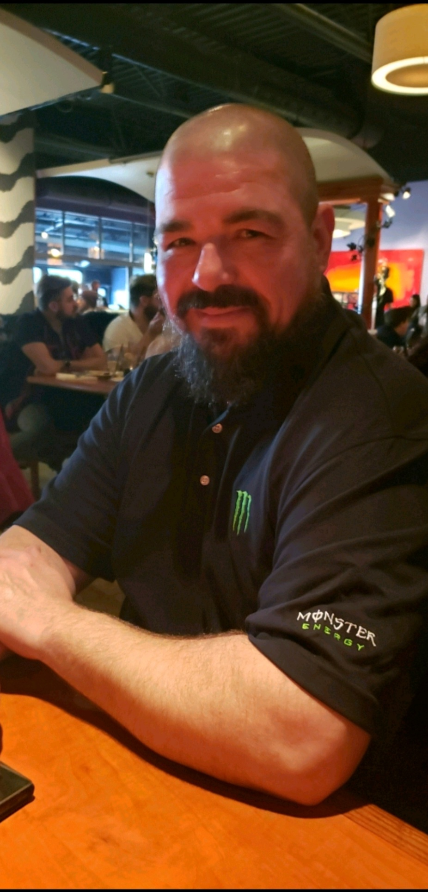

About Me:
I am an apprentice on a modern quest, learning the craft of mobile development much like a young smith learning to shape metal in ancient halls. My tools aren’t hammer and anvil—at least not in this realm—but languages, frameworks, and the glowing runes of code that power the apps we carry every day. In my course, each lesson feels like discovering a new enchantment, a technique that helps me transform raw ideas into living, responsive creations. I approach this path the way one steps into a forge of legends: with patience, respect for the craft, and a drive to shape something worthy of the stories that inspired me.
Gungnir Forge stands as a place where ancient craftsmanship meets modern imagination—a forge born from legends yet shaped with the creativity of the present. Inspired by the storied weapon whose name it bears, the forge symbolizes precision, purpose, and the belief that great creations are not merely built, but forged through dedication and vision. Within its imagined halls, sparks fly from enchanted anvils, and each project is treated like a relic in the making, crafted with the same care a master smith would give to a hero’s weapon.
My Skills
SSS
UIUX
VCC
As I continue my journey through the forge, I plan to strengthen my skills across many branches of the craft—mastering Java and Swift to build apps for both Android and iOS, sharpening my front‑end abilities with HTML/CSS, JavaScript, Angular, and React, and enriching my designs through graphic design and Linux foundations. All of this training will lead into my capstone project, where I’ll bring these elements together like metals fused in a single flame, forging a creation that represents the future developer I’m becoming.